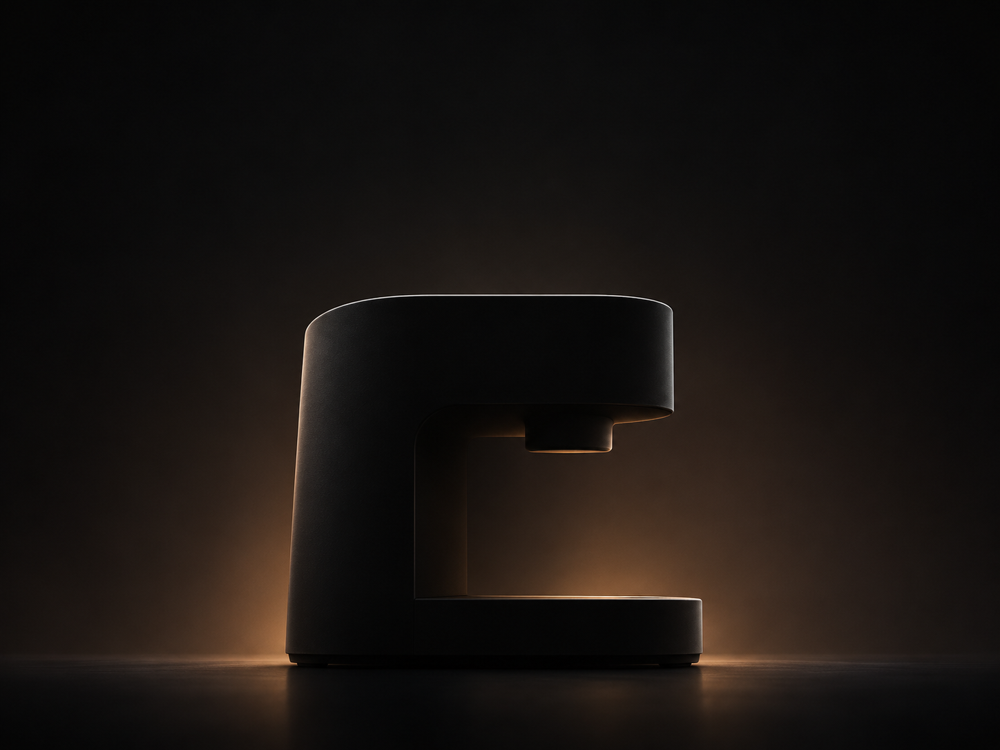
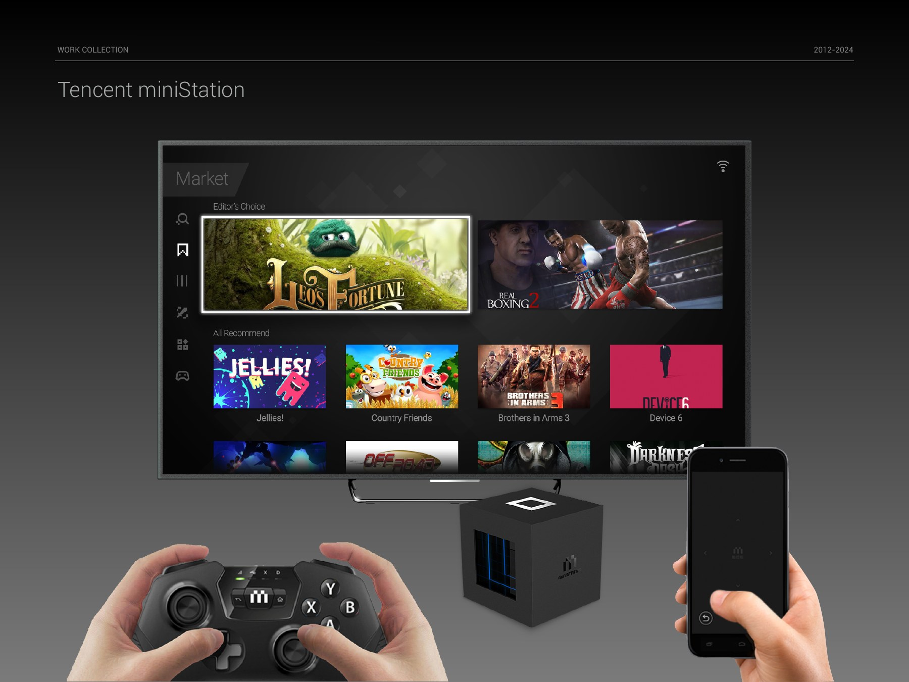
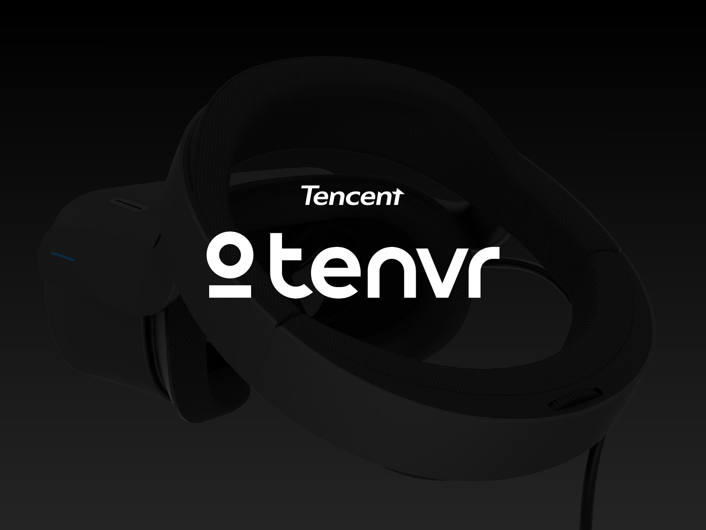

进行中
空间交互、轻量智能眼镜与 MR 人因研究。
以灯光、声音和 App 协同，建立无屏设备的清晰反馈与日常信任。

电视端游戏发现、内容详情与多任务体验。
Lens AR / AI 识别与信息流设计，连接现实场景与数字内容。
移动系统的图形语言、图标与 Launcher 概念探索。

虚拟现实设备的体验流程、空间界面与品牌表达。
从角色形象设定到现场互动，探索虚拟角色与人的联系。
Aura 2.0：面向桌面大屏的内容组织与共享体验。